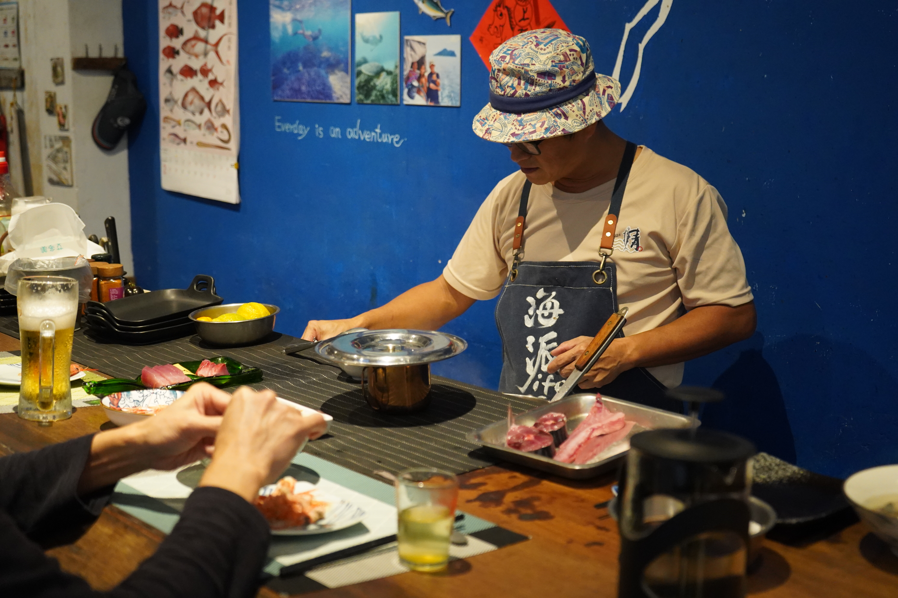

這是餐廳「海派生活」的主理人雷震洲（江湖人稱「小雷」）常掛在嘴邊的一句話。
在清晨帶領遊客划向大海迎接第一道曙光，上午回到旅行社處理繁忙業務，下午趕赴魚市場挑選當日新鮮漁獲，傍晚則回到海邊的餐廳親自下廚、並陪伴客人小酌敘情。這是雷震洲一天的縮影，也是他口中雖然勞累卻「樂在其中」的海派生活。在南方澳這個百年漁港，他正試圖用一道道沒有固定菜單的料理，以及一場場親水活動，推動著一場屬於在地的「新討海運動」。
與故鄉的海重新相遇
在旅遊業打拚了數十年，雷震洲的足跡遍布台北、綠島、台東、花蓮等地。二十多年前，他回到故鄉蘇澳，開始幫父親賣冰。而大約在 2000 年，宜蘭突然掀起一陣賞鯨熱潮，雷震洲與宜蘭縣政府及在地觀光產業結盟，一口氣開發出數百條宜蘭在地遊程，並於 2004 年正式創立了「尚海旅行社」。
在推廣賞鯨與在地旅遊的過程中，或許是早年待在綠島推廣海域活動所埋下的伏筆，雷震洲逐漸被蘇澳眼前的這片海洋深深吸引。他笑著回顧這段奇妙的連結：「我叫雷震洲，『震洲』這兩個字都帶著水。可能就是因為命中缺水，才讓我這輩子注定要與蘇澳的這片海結下這麼深的緣分。」
然而，真正讓雷震洲與蘇澳的海產生深刻連結，是大約十年前接觸到立槳（SUP）運動。「蘇澳的海是小而美的，像是內埤、賊仔澳、豆腐岬等地方的地形變化都非常豐富。」雷震洲談起故鄉的海，語氣中帶著自豪。他特別提到，蘇澳豆腐岬擁有世界上第一筆珊瑚產卵的紀錄，短短 50 公尺內就有多達一百五十種珊瑚礁。這片五彩繽紛的海域，也讓雷震洲在五年前成立「海派生活」——一間沒有固定菜單的海鮮餐廳，希望打造一個讓遊客能玩水、吃魚、近距離感受海洋脈動的基地。

餐桌上的海派生活
從旅行社跨足餐飲業，雷震洲在廚藝方面完全是「半路出家」，因此從挑魚、殺魚到烹飪的技術，全都是從零開始，靠自己摸索自學。談起這段從無到有的過程，他以相當勤奮的方式學習：「就每天吃，慢慢去接觸，然後去網路或書籍中研究。」
雷震洲坦言，將一條魚處理成生魚片看似簡單，YouTube 上也有無數的教學影片，但真正站上砧板時，靠的全是實作累積出的「手感」。從選用刀具的長短、解魚與切生魚片需替換不同種類的刀具，到下刀時的力道與角度，每一個細微的動作都需要長期的經驗去揣摩與體會。憑藉著對海洋的熱忱與單純覺得「有趣」的初衷，他一步步吸取影片裡的料理技術，最終淬鍊成端上餐桌的一道道自信料理。

從吃魚開始的「新討海運動」
「海派生活」於 2021 年正式開幕，卻在短短半個月後慘遭新冠疫情打擊。然而，低谷中往往蘊藏著轉機。在餐廳無法營業的期間，雷震洲結識了喜愛拍魚的林文集。兩人在無數次拍魚和料理的過程中，逐漸發覺南方澳的海鮮不應只是餐桌上的消耗品，更應該延伸出廣闊的「食魚教育」，將吃魚昇華為一種藝術。
與林文集創辦的「四魚故事館」合作，不僅帶領遊客認識南方澳豐富的在地魚種，更細膩講述了第一線捕魚人的生命故事。除此之外，他們進一步推出「旬魚鱻旅行」的深度遊程，建構了完整的參與式體驗：從認識討海人、辨識各類漁船與專業漁法（如延繩釣、大型圍網、一支釣等），接著親自走入魚市場學習如何挑選當季的新鮮漁獲，最後再回到「海派廚房」親手體驗殺魚與烹調。這段從海洋到餐桌的歷程，讓遊客的每一次品嚐，都能對海洋資源有更深刻的理解。
回顧南方澳的漁業發展，猶如一部「壓縮現代化」的歷史縮影。在 2000 年後，漁業的捕撈技術快速升級，例如全台最多的大型三角虎圍網就聚集於此。所謂的「三角虎」（即扒網），是一種極度高效的捕魚方式。漁民通常會在夜間出動燈船，利用強大的集魚燈光將海面上的鯖魚等洄游魚群大面積吸引聚集，接著由主船迅速撒下巨型圍網將其包抄，甚至搭配高功率的吸魚機，將網內的魚群連同海水一網打盡。然而，這種一次捕撈數萬噸的高效漁法，卻也讓南方澳快速面臨海洋資源枯竭的危機。與此同時，勞動市場的結構也產生了劇變。高工時、高風險的傳統捕撈業，面臨著嚴重的世代斷層。
雷震洲語重心長地說到。如今，第一線的捕撈勞動力已大量仰賴外籍漁工，有時整艘船上只有船長是台灣人。面對這樣的困境，雷震洲推動的「新討海運動」成為一種解方。他向政府申請地方創生計畫，提倡「友善釣魚」與水上活動，將一次性的大量捕撈，轉型為海洋運動嘉年華，讓漁村的經濟來源從單一的「消耗海洋」轉向「體驗海洋」。

駛向更遠的海洋藍圖
除了漁業轉型，雷震洲還有一個更大的藍圖：打通蘇澳與日本石垣島的航線。蘇澳與石垣島締結姐妹市已達三十年，但民間的水路卻遲遲無法打通，最大的阻礙來自於僵化的法規與制度。
雷震洲指出，蘇澳港目前受限於商港法（根據現行法規，蘇澳港定位為商港與軍港，資源配置優先供應大型貨運與軍務；由於缺乏專屬「遊艇碼頭」規劃，且進出港受嚴格的程序通關、檢疫、安檢、緝私管制，私人遊艇與帆船難以獲得常態性許可），僅開放客輪與貨輪進出，並沒有設置遊艇碼頭，一般的遊艇與帆船若要進出，會被海關擋下。「不是不能進來，而是海關不讓你進來。」雷震洲表示，若未來商港法能有所調整，增設遊艇碼頭，從蘇澳直航日本的海洋生活圈將不再只是夢想。
雷震洲坦言，「我們做餐廳其實沒有賺到錢，反而是水域的這個區塊才有賺到錢」。儘管如此，他堅持保留這間無菜單海鮮餐廳，因為這不僅是他自己想過的生活，更是傳遞海洋保育觀念的基地。
在這個充滿挑戰的時代，雷震洲要用他黝黑的皮膚和爽朗的笑聲證明：面對環境與時代的巨變，只要找回與蘇澳港共生的節奏，依然能走出一條寬廣且屬於自己的「海派」之路。